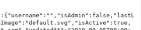

Start by intercepting a request to register a user and use the repeater to easily use burp to register users
notice the response to the request, alot of details come back with it
if the response return the details of the paramaters of the request (like email:"example@a.b",username:"examuser") and there are more paramaters that could not be normally changed with the ui of the requests
(notice the "isAdmin")
you can change the request and repeat it to try and change those fields and possibly register a user with different settings